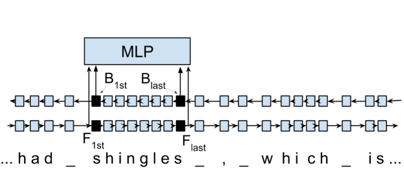
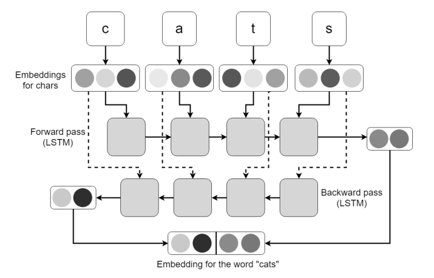
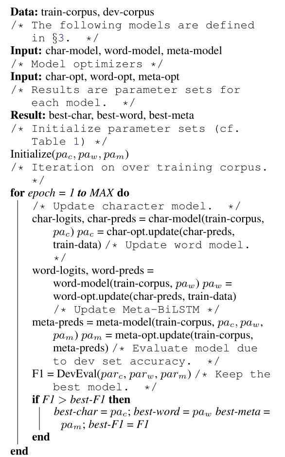

Prashant Tak
Created: 2021-04-12 Mon 14:57
Morphosyntactic Tagging with a Meta-BiLSTM Model

This presentation contains a complete overview of the titled paper and provides a basic outline of related concepts. This paper aims to investigate to what extent having initial sub-word and word context insensitive representations affect performance.
Key Terms
- Morphosyntactic = Morphology + Syntax and Morphology is study of words, how they are formed, and their relationship to other words in the same language.
- RNN: On difficulty of training RNNs
- LSTM: Long Short-Term Memory is a type of RNN that addresses the vanishing gradient problem through additional cells, input and output gates.
- BiLSTM: It is a sequence processing model that consists of two LSTMs. They effectively increase the amount of information available to the network, improving the context available to the algorithm (e.g. knowing what words immediately follow and precede a word in a sentence).
Basics of NLP
NLP:
Natural Language Processing concerns itself with interaction of technology with human languages.
Tokenization:
An early step in the NLP process which splits longer strings of text into smaller pieces, or tokens.
Normalization:
A series of tasks meant to put all text on a level playing field i.e. converting it to lowercase, removing punctuation, expanding contractions, converting numbers to their word equivalents, stripping white space, removing stop words and so on.
Stemming:
Process of eliminating affixes (suffixes, prefixes, infixes, circumfixes) from a word to obtain its stem. For example, running becomes run.
Lemmatization:
It’s related to stemming but is able to capture canonical forms based on the word’s lemma (root form). For example, better would turn into good.
Corpus:
The latin word for body refers to a collection of texts which may be formed of a single language of texts, or multiple. They are generally used for statistical linguistic analysis and hypothesis testing.
Stop words:
Filter words which contribute little to the overall meaning of text since they are the very common words of the language. For example: the, a etc.
Parts-of-speech (POS) Tagging:
It consists of assigning a category tag to the tokenized parts of a sentence such as nouns, verbs, adjectives etc. The category of words is distinguished since they share similar grammatical properties.
Statistical Language Modeling:
It’s the process of building a model which takes words as input and assign probabilities to the various sequences that can be formed using them.
Bag of words:
It’s a representation model used to simplify the contents of a selection of text by just reducing the words to their frequency.
n-gram:
It focuses on preserving contagious sequences of N items from the text selection.
A framework for NLP
Data Collection or Assembly:
Building the corpus.
Data Preprocessing:
Perform operations on the collected corpus which consists of tokenization, normalization, substitution (noise removal).
Data Exploration & Visualization:
Includes visualizing word counts and distributions, generating wordclouds, performing distance measures.
Model Building:
Choosing the language models (FSM, MM), classifiers and sequence models (RNNs, LSTMs).
Model Evaluation
Data Representation
- We need to encode text in a way that can be controlled by us using a statistical classifier.
- We go from a set of categorical features in text: words, letters, POS tags, word arrangement, order etc to a series of vectors.
One-hot Encoding (Sparse Vectors) :
- Each word, or token corresponds to a vector element.
- Result of one-hot encoding is a sparse matrix, that is, for a corpus containing a lot of tokens, representing a small subset of them would lead to a lot of zero vectors which would consume a large amount of memory.
- One more drawback is that while it contains the information regarding the presence of a certain word, it lacks positional information so making sense of the tokens is not an option. For example, Kate hates Alex is the same as Alex hates Kate.
- Variants of one-hot encoding are bag-of-words, n-gram and TF-IDF representations.
Dense Embedding Vectors:
- The information of the semantic relationship between tokens can be conveyed using manual or learned POS tagging that determines which tokens in a text perform what type of function. (noun, verb, adverb, etc)
- This is useful for named entity recognition, i.e. our search is restricted to just the nouns.
- But if one represents features1 as dense vectors i.e. with core features embedded into an embedding space of size d dimensions, we can compress the number of dimensions used to represent a large corpus into a manageable amount.
- Here, each feature no longer has its own dimension but is rather mapped to a vector.
TODO Word Representation
TODO Subword models
- Purely Character-level models: In character-level modes, word embeddings2 can be composed of character embeddings which have several advantages. Character-level models are needed because:
- Languages like Chinese don’t have word segmentations.
- For languages that do have, they segment in different ways.
- To handle large, open, informal vocabulary.
- Character level model can generate embeddings for unknown words.
- Similar spellings share similar embeddings
- Subword-models: TBD???
Introduction
Introduction
Morphosyntactic tagging accuracy has improved due to using BiLSTMs to create sentence-level context sensitive encodings3 of words.
Introduction
It is done by creating an initial context insensitive word representation4 having three parts:
- A dynamically trained word embedding
- A fixed pre-trained word-embedding, induced from a large corpus
- A sub-word character model, which is the final state of a RNN model that ingests one character at a time.
Introduction
In such a model, sub-word character-based representations only interact via subsequent recurrent layers. To elaborate, context insensitive representations would normalize words that shouldn’t be, but due to the subsequent BiLSTM layer, this would be overridden. This behaviour differs from traditional linear models.5
Introduction
This paper aims to investigate to what extent having initial subword and word context insensitive representations affect performance. It proposes a hybrid model based on three models- context sensitive initial character and word models and a meta-BiLSTM model which are all trained synchronously.
Introduction
On testing this system on 2017 CoNLL data sets, largest gains were found for morphologically rich languages, such as in the Slavic family group. It was also benchmarked on English PTB(?) data, where it performed extremely well compared to the previous best system.
Models
Sentence-based Character Model
In this model, a BiLSTM is applied to all characters of a sentence to induce fully context sensitive initial word encodings. It uses sentences split into UTF8 characters as input, the spaces between the tokens are included and each character is mapped to a dynamically learned embedding. A forward LSTM reads the characters from left to right and a backward LSTM reads sentences from right to left.
Sentence-based Character Model

Figure 2: Sentence-based Character Model: The representation for the token shingles is the concatenation of the four shaded boxes.
Sentence-based Character Model
For an n-character sentence, for each character embedding \((e_{1}^{char},...,e_{n}^{char})\), a BiLSTM is applied: \[ f_{c,i}^{0},b_{c,i}^{0} = BiLSTM(r_{0},(e_{1}^{char},...,e_{n}^{char}))_{i} \] For multiple layers(l) that feed into each other through the concatenation of previous layer encodings, the last layer has both forward \((f_{c,l}^{l},...,f_{c,n}^{l})\) and backward \((b_{c,l}^{l},...,b_{c,n}^{l})\) output vectors for each character.
Sentence-based Character Model
To create word encodings, relevant subsets of these context sensitive character encodings are combined which can then be used in a model that assigns morphosyntactic tags to each word directly or via subsequent layers. To accomplish this, the model concatenates upto four character output vectors: the {forward, backward} output of the {first, last} character in the token T = \((F_{1st}(w), F_{last}(w), B_{1st}(w), B_{last}(w))\) which are represented by the four shaded box in Fig. 1.
Sentence-based Character Model
Thus, the proposed model concatenates all four of these and passes it as input to an multilayer perceptron (MLP): \[ g_{i} = concat(T) \] \[ m_{i}^{chars} = MLP(g_{i}) \] A tag can then be predicted with a linear classifier that takes as input \(m_{i}^{chars}\), applies a softmax function and chooses for each word the tag with highest probability.
Word-based Character Model
To investigate whether a sentence sensitive character model (Fig.1) is better than a model where the context is restricted to the characters of a word, (Fig.2) which uses the final state of a unidirectional LSTM, combined with the attention mechanism of (ADD REF: cao rei) over all characters.
Word-based Character Model

Figure 3: Word-based Character Model: The token is represented by concatenation of attention over the lightly shaded boxes with the final cell (dark box).
Word-based Character Model

Figure 4: BiLSTM variant of Character-level word representation
Sentence-based Word Model
The inputs are the words of the sentence and for each of the words, we use pre-trained word embeddings \((p_{1}^{word},...,p_{n}^{word})\) summed with a dynamically learned word embedding for each word in the corpus \((e_{1}^{word},...,e_{n}^{word})\): \[ in_{i}^{word} = e_{i}^{word}+p_{i}^{word} \]
Sentence-based Word Model
The summed embeddings \(in_{i}\) are passed as input to one or more BiLSTM layers whose output \(f_{w,i}^{l}, b_{w,i}^{l}\) is concatenated and used as the final encoding, which is then passed to an MLP: \[ o_{i}^{word} = concat(f_{w,i}^{l}, b_{w,i}^{l}) \] \[ m_{i}^{word} = MLP(o_{i}^{word}) \] The output of this BiLSTM is essentially the Word-based Character Model before tag prediction, with the exception that the word-based character encodings are excluded.
Sentence-based Word Model

Figure 5: Tagging Architecture of Word-based Character Model and Sentence-based Word Model
Meta-BiLSTM: Model Combination
If each of the character or word-based encodings are trained with their own loss and are combined using an additional meta-BiLSTM model, optimal performance is obtained. The meta-biLSTM model concatenates the output of context sensitive character and word-based encoding for each word and puts this through another BiLSTM to create an additional combined context sensitive encoding. This is followed by a final MLP whose output is passed to a linear layer for tag prediction. \[ cw_{i} = concat(m_{i}^{char}, m_{i}^{word}) \] \[ f_{m,i}^{l}, b_{m,i}^{l} = BiLSTM(r_{0},(cw_{0},...,cw_{n}))_{i} \] \[ m_{i}^{comb} = MLP(concat(f_{m,i}^{l}, b_{m,i}^{l})) \]
Meta-BiLSTM: Model Combination
Tagging Architecture of Meta-BiLSTM. Data flows along the arrows and the optimizers minimize the loss of the classifiers independently and backpropogate along the bold arrows.

Training Schema
Loss of each model is minimized independently by separate optimizers with their own hyperparameters which makes this a multi-task learning model and hence a schedule must be defined in which individual models are updated. In the proposed algorithm, during each epoch, each of the models are updated in sequence using the entire training data.
Training Schema

Training Schema
In terms of model selection, after each epoch, the algorithm evaluates the tagging accuracy of the development set and keeps the parameters of the best model. Accuracy is measured using the meta-BiLSTM tagging layer, which requires a forward pass through all three models. Only the meta-BiLSTM layer is used for model selection and test-time prediction.
Training Schema
The training is synchronous as the meta-BiLSTM model is trained in tandem with the two encoding models, and not after they have converged. When the meta-BiLSTM was allowed to back-propagate through the whole network, performance degraded regardless of the number of loss functions used. Each language could in theory used separate hyperparameters but identical settings for each language works well for large corpora.
Experiments and Results
Experimental Setup
The word embeddings are initialized with zero values and the pre-trained embeddings are not updated during training. The dropout6 used on the embeddings is achieved by a single dropout mask and dropout is used on the input and the states of the LSTM.
Architecture
| Model | Parameter | Value |
|---|---|---|
| C,W | BiLSTM Layers | 3 |
| M | BiLSTM Layers | 1 |
| CWM | BiLSTM size | 400 |
| CWM | Dropout LSTM | 0.33 |
| CWM | Dropout MLP | 0.33 |
| W | Dropout Embeddings | 0.33 |
| C | Dropout Embedding | 0.5 |
| CWM | Nonlinear Activation Fn (MLP) | ELU |
Initialization
| Model | Parameter | Value |
|---|---|---|
| W | Embeddingsg | Zero |
| C | Embeddings | Gaussian |
| CWM | MLP | Gaussian |
Training
| Model | Parameter | Value |
|---|---|---|
| CWM | Optimizer | Adam |
| CWM | Loss | Cross Entropy |
| CWM | Learning Rate | 0.002 |
| CWM | Decay | 0.999994 |
| CWM | Adam Epsilon | 1e-08 |
| CWM | Beta1 | 0.9 |
| CWM | Beta2 | 0.999 |
Data Sets
The data set used was provided by the CoNLL Shared Task 2017. Training tree-bank was used for training only and development sets were used for hyperparameter tuning and early stopping.
POS Tagging Results
POS Tagging on WSJ
Morphological Tagging Results
Ablation Study (Takeaways)
Impact of the training schema:
Separate optimization better than Joint optimization
Impact of the Sentence-based Character Model:
Higher accuracy than word-based character context
Impact of the Meta-BiLSTM Model Combination:
Combined model has significantly higher accuracy than individual models
Concatenation Strategies for the Context-Sensitive Character Encodings:
Model bases a token encoding on both forward and backward character representations of both first and last character in token. (Fig. 1) ….
Sensitivity to Hyperparameter Search:
With larger network sizes, capacity of the network increases, but it becomes prone to overfitting. Future variants of this model might benefit from higer regularization.
Discussion:
TODO Proposed modifications